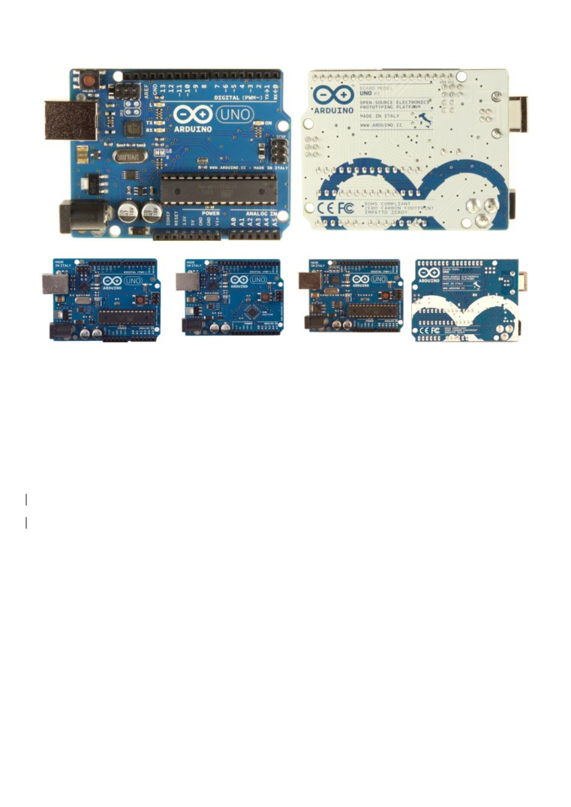

Arduino Uno
Arduino Uno R3 Front
Arduino Uno R3 Back
Arduino Uno R2 Front
Arduino Uno SMD
Arduino Uno Front
Arduino Uno Back
Overview
The Arduino Uno is a microcontroller board based on the ATmega328 (datasheet). It has 14 digital
input/output pins (of which 6 can be used as PWM outputs), 6 analog inputs, a 16 MHz ceramic
resonator, a USB connection, a power jack, an ICSP header, and a reset button. It contains everything
needed to support the microcontroller; simply connect it to a computer with a USB cable or power it
with a AC-to-DC adapter or battery to get started.
The Uno differs from all preceding boards in that it does not use the FTDI USB-to-serial driver chip.
Instead, it features the Atmega16U2 (Atmega8U2 up to version R2) programmed as a USB-to-serial
converter.
Revision 2 of the Uno board has a resistor pulling the 8U2 HWB line to ground, making it easier to put
into DFU mode.
Revision 3 of the board has the following new features:
1.0 pinout: added SDA and SCL pins that are near to the AREF pin and two other new pins
placed near to the RESET pin, the IOREF that allow the shields to adapt to the voltage provided
from the board. In future, shields will be compatible both with the board that use the AVR,
which operate with 5V and with the Arduino Due that operate with 3.3V. The second one is a
not connected pin, that is reserved for future purposes.
Stronger RESET circuit.
Atmega 16U2 replace the 8U2.
"Uno" means one in Italian and is named to mark the upcoming release of Arduino 1.0. The Uno and
version 1.0 will be the reference versions of Arduino, moving forward. The Uno is the latest in a series
of USB Arduino boards, and the reference model for the Arduino platform; for a comparison with
previous versions, see the index of Arduino boards.
Summary
Microcontroller
ATmega328
Operating Voltage
5V
Input Voltage (recommended) 7-12V
Input Voltage (limits)
6-20V
Digital I/O Pins
14 (of which 6 provide PWM output)
Analog Input Pins
6
DC Current per I/O Pin
40 mA
DC Current for 3.3V Pin
50 mA
Flash Memory
32 KB (ATmega328) of which 0.5 KB used by bootloader
SRAM
2 KB (ATmega328)
EEPROM
1 KB (ATmega328)
Clock Speed
16 MHz
Schematic & Reference Design
Note: The Arduino reference design can use an Atmega8, 168, or 328, Current models use an
ATmega328, but an Atmega8 is shown in the schematic for reference. The pin configuration is identical
on all three processors.
Power
The Arduino Uno can be powered via the USB connection or with an external power supply. The power
source is selected automatically.
External (non-USB) power can come either from an AC-to-DC adapter (wall-wart) or battery. The
adapter can be connected by plugging a 2.1mm center-positive plug into the board's power jack. Leads
from a battery can be inserted in the Gnd and Vin pin headers of the POWER connector.
The board can operate on an external supply of 6 to 20 volts. If supplied with less than 7V, however,
the 5V pin may supply less than five volts and the board may be unstable. If using more than 12V, the
voltage regulator may overheat and damage the board. The recommended range is 7 to 12 volts.
The power pins are as follows:
VIN. The input voltage to the Arduino board when it's using an external power source (as
opposed to 5 volts from the USB connection or other regulated power source). You can supply
voltage through this pin, or, if supplying voltage via the power jack, access it through this pin.
5V.This pin outputs a regulated 5V from the regulator on the board. The board can be supplied
with power either from the DC power jack (7 - 12V), the USB connector (5V), or the VIN pin of
the board (7-12V). Supplying voltage via the 5V or 3.3V pins bypasses the regulator, and can
damage your board. We don't advise it.
3V3. A 3.3 volt supply generated by the on-board regulator. Maximum current draw is 50 mA.
GND. Ground pins.
Memory
The ATmega328 has 32 KB (with 0.5 KB used for the bootloader). It also has 2 KB of SRAM and 1 KB
of EEPROM (which can be read and written with the EEPROM library).
Input and Output
Each of the 14 digital pins on the Uno can be used as an input or output, using pinMode(),
digitalWrite(), and digitalRead() functions. They operate at 5 volts. Each pin can provide or receive a
maximum of 40 mA and has an internal pull-up resistor (disconnected by default) of 20-50 kOhms. In
addition, some pins have specialized functions:
Serial: 0 (RX) and 1 (TX). Used to receive (RX) and transmit (TX) TTL serial data. These pins
are connected to the corresponding pins of the ATmega8U2 USB-to-TTL Serial chip.
External Interrupts: 2 and 3. These pins can be configured to trigger an interrupt on a low
value, a rising or falling edge, or a change in value. See the attachInterrupt() function for
details.
PWM: 3, 5, 6, 9, 10, and 11. Provide 8-bit PWM output with the analogWrite() function.
SPI: 10 (SS), 11 (MOSI), 12 (MISO), 13 (SCK). These pins support SPI communication
using the SPI library.
LED: 13. There is a built-in LED connected to digital pin 13. When the pin is HIGH value, the
LED is on, when the pin is LOW, it's off.
The Uno has 6 analog inputs, labeled A0 through A5, each of which provide 10 bits of resolution (i.e.
1024 different values). By default they measure from ground to 5 volts, though is it possible to change
the upper end of their range using the AREF pin and the analogReference () function. Additionally, some
pins have specialized functionality:
TWI: A4 or SDA pin and A5 or SCL pin. Support TWI communication using the Wire library.
There are a couple of other pins on the board:
AREF. Reference voltage for the analog inputs. Used with analogReference ().
Reset. Bring this line LOW to reset the microcontroller. Typically used to add a reset button to
shields which block the one on the board.
See also the mapping between Arduino pins and ATmega328 ports. The mapping for the Atmega8,
168, and 328 is identical.
Communication
The Arduino Uno has a number of facilities for communicating with a computer, another Arduino, or
other microcontrollers. The ATmega328 provides UART TTL (5V) serial communication, which is
available on digital pins 0 (RX) and 1 (TX). An ATmega16U2 on the board channels this serial
communication over USB and appears as a virtual com port to software on the computer. The '16U2
firmware uses the standard USB COM drivers, and no external driver is needed. However, on Windows,
a .inf file is required. The Arduino software includes a serial monitor which allows simple textual data to
be sent to and from the Arduino board. The RX and TX LEDs on the board will flash when data is being
transmitted via the USB-to-serial chip and USB connection to the computer (but not for serial
communication on pins 0 and 1).
The ATmega328 also supports I2C (TWI) and SPI communication. The Arduino software includes a
Wire library to simplify use of the I2C bus; see the documentation for details. For SPI communication,
use the SPI library.
Programming
The Arduino Uno can be programmed with the Arduino software (download ). Select "Arduino Uno from
the Tools > Board menu (according to the microcontroller on your board). For details, see the
The ATmega328 on the Arduino Uno comes preburned with a bootloader that allows you to upload new
code to it without the use of an external hardware programmer. It communicates using the original
STK500 protocol (reference, C header files).
You can also bypass the bootloader and program the microcontroller through the ICSP (In-Circuit
The ATmega16U2 (or 8U2 in the rev1 and rev2 boards) firmware source code is available . The
ATmega16U2/8U2 is loaded with a DFU bootloader, which can be activated by:
On Rev1 boards: connecting the solder jumper on the back of the board (near the map of Italy)
and then resetting the 8U2.
On Rev2 or later boards: there is a resistor that pulling the 8U2/16U2 HWB line to ground,
making it easier to put into DFU mode.
load a new firmware. Or you can use the ISP header with an external programmer (overwriting the
Automatic (Software) Reset
Rather than requiring a physical press of the reset button before an upload, the Arduino Uno is
designed in a way that allows it to be reset by software running on a connected computer. One of the
hardware flow control lines (DTR) of the ATmega8U2/16U2 is connected to the reset line of the
ATmega328 via a 100 nanofarad capacitor. When this line is asserted (taken low), the reset line drops
long enough to reset the chip. The Arduino software uses this capability to allow you to upload code by
simply pressing the upload button in the Arduino environment. This means that the bootloader can
have a shorter timeout, as the lowering of DTR can be well-coordinated with the start of the upload.
This setup has other implications. When the Uno is connected to either a computer running Mac OS X
or Linux, it resets each time a connection is made to it from software (via USB). For the following half-
second or so, the bootloader is running on the Uno. While it is programmed to ignore malformed data
(i.e. anything besides an upload of new code), it will intercept the first few bytes of data sent to the
board after a connection is opened. If a sketch running on the board receives one-time configuration or
other data when it first starts, make sure that the software with which it communicates waits a second
after opening the connection and before sending this data.
The Uno contains a trace that can be cut to disable the auto-reset. The pads on either side of the trace
can be soldered together to re-enable it. It's labeled "RESET-EN". You may also be able to disable the
auto-reset by connecting a 110 ohm resistor from 5V to the reset line; see this forum thread for
details.
USB Overcurrent Protection
The Arduino Uno has a resettable polyfuse that protects your computer's USB ports from shorts and
overcurrent. Although most computers provide their own internal protection, the fuse provides an extra
layer of protection. If more than 500 mA is applied to the USB port, the fuse will automatically break
the connection until the short or overload is removed.
Physical Characteristics
The maximum length and width of the Uno PCB are 2.7 and 2.1 inches respectively, with the USB
connector and power jack extending beyond the former dimension. Four screw holes allow the board to
be attached to a surface or case. Note that the distance between digital pins 7 and 8 is 160 mil
(0.16"), not an even multiple of the 100 mil spacing of the other pins.